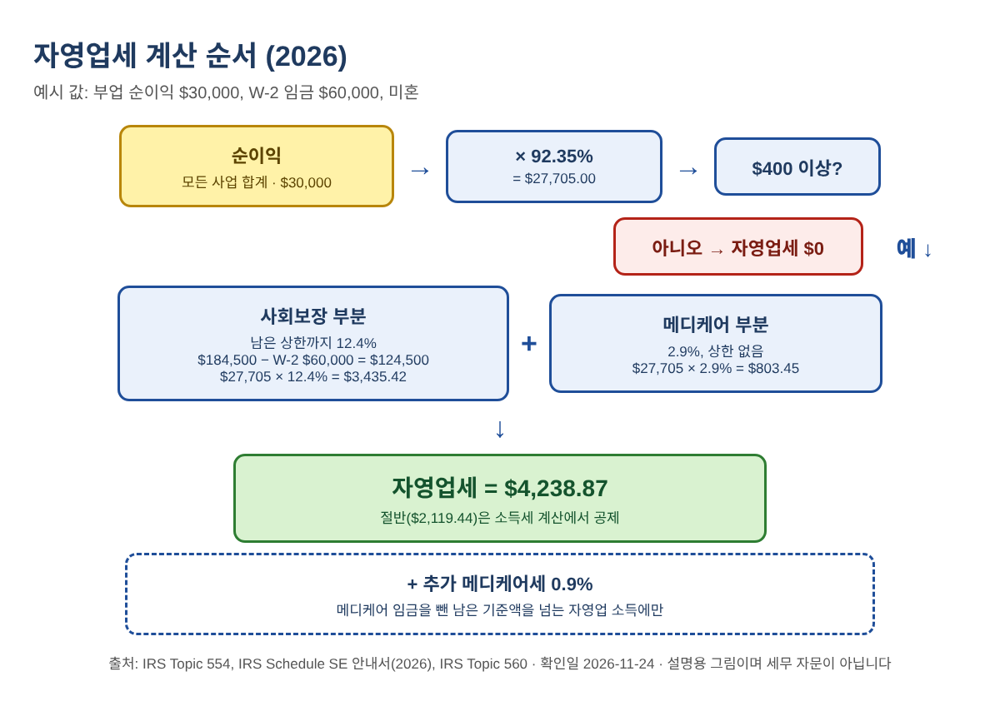
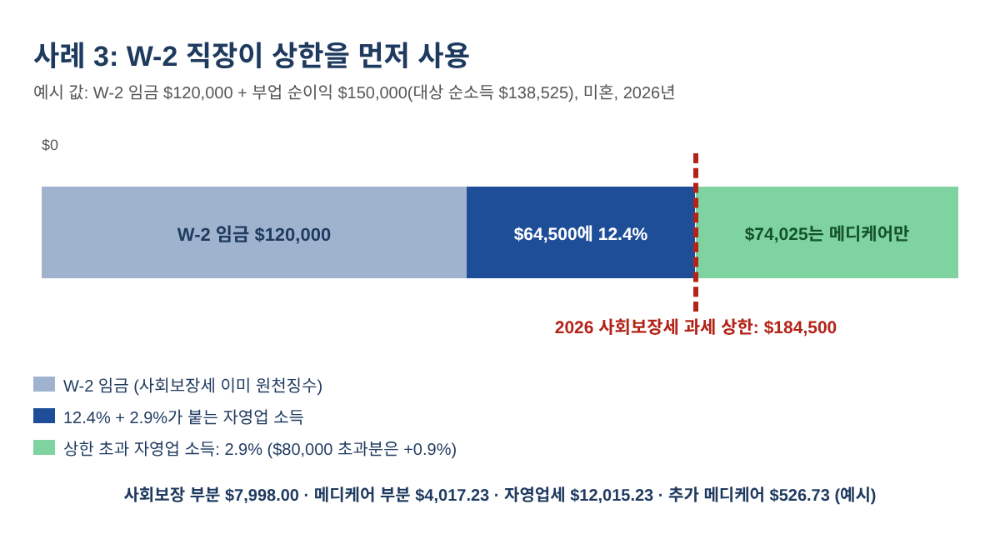
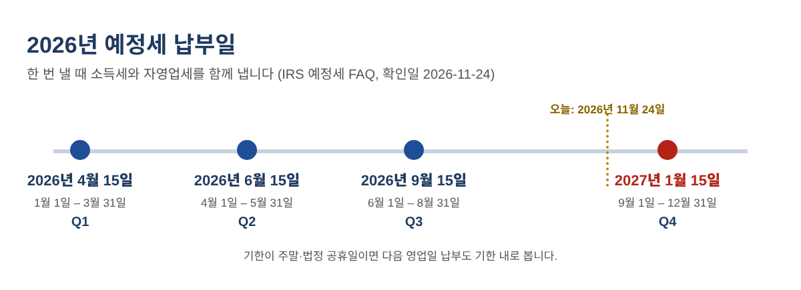

2026년 자영업세(SE Tax) 직접 계산하는 법: W-2 직장과 부업이 함께 있을 때
프리랜서, 배달·라이드 앱 기사, 온라인 판매, 가게 운영처럼 스스로 일해서 이익이 생기면 소득세 말고도 세금이 하나 더 붙습니다. 바로 자영업세(Self-Employment Tax)입니다. 직원이라면 회사와 나눠 내는 사회보장세·메디케어세를 혼자 내는 셈인데, 낮에는 W-2 직장을 다니고 저녁·주말에 부업을 하는 분들이 특히 많이 헷갈립니다. 회사에서 이미 떼어 간 금액에 따라 계산이 달라지기 때문입니다. 2026년 마지막 예정세 납부일이 2027년 1월 15일이니, 11월 말은 한 번 계산해 보기 좋은 때입니다.
이 글은 일반적인 교육용 정보이며 세무·법률 자문이 아닙니다. 본인 상황은 세무 전문가와 확인하세요.
1분 요약: 기본 규칙
IRS는 사회보장세 12.4%와 메디케어세 2.9%를 안내하며, 합치면 15.3%입니다. 일반적으로 자영업 순소득의 92.35%에 적용되고, 그 순소득이 $400 이상이면 보통 내야 합니다. 사회보장세 부분은 해마다 정해지는 과세 상한까지만 붙는데, 이 상한은 W-2 임금과 자영업 소득을 합쳐서 봅니다. 메디케어 부분은 상한이 없습니다.
| 항목 | 2026 | 2027 |
|---|---|---|
| 사회보장세 과세 상한 (W-2 + 자영업 합산) | $184,500 | $192,300 |
| 사회보장 부분 / 메디케어 부분 | 12.4% / 2.9% | 12.4% / 2.9% |
| 순이익 중 계산에 넣는 비율 | 92.35% | 92.35% |
| 기준액을 넘는 자영업 소득의 추가 메디케어세 | 0.9% | 0.9% |
2027년 상한은 사회보장국(SSA) 2027 자료에서 가져왔습니다. 나머지 2027년 규칙은 같다고 보고 설명했으니, 2027년 IRS 양식이 나오면 꼭 확인하세요.

단계별로 직접 계산하기
- 자영업 순이익을 더합니다. 사업 경비를 뺀 이익입니다. 사업이 둘 이상이면 Schedule SE는 일반적으로 합친 결과로 계산하므로, 한 사업의 손실이 다른 사업의 이익을 줄일 수 있습니다.
- 92.35%를 곱합니다. 이것이 자영업 순소득입니다. $400 미만이면 일반적으로 자영업세가 없습니다. (순이익이 약 $433.14이면 $400에 닿습니다.)
- W-2 사회보장 임금을 확인합니다. 모든 W-2의 사회보장 임금과 팁을 더합니다. 직장이 없으면 0입니다.
- 남은 상한을 구합니다. 상한(2026년 $184,500)에서 W-2 임금을 뺍니다. 0보다 작아지지 않습니다.
- 사회보장 부분: 2단계와 4단계 중 작은 금액 × 12.4%.
- 메디케어 부분: 2단계 × 2.9% (상한 없음).
- 자영업세 = 5단계 + 6단계. 이 중 절반은 소득세 계산에서 빼 주는 항목이며, 자영업세 자체를 줄이지는 않습니다.
- 추가 메디케어세를 확인합니다. 기준액(미혼·세대주·적격 생존 배우자 $200,000, 부부 공동 $250,000, 부부 개별 $125,000)에서 W-2 메디케어 임금과 팁을 빼고, 2단계 금액 중 남은 기준액을 넘는 부분에 0.9%를 곱합니다. 자영업 손실은 여기서 쓰지 않습니다.
엑셀이나 구글 시트에서는 B1에 순이익, B2에 W-2 사회보장 임금, B3에 메디케어 임금, B4에 상한(184500), B5에 기준액(미혼 200000)을 넣고 아래처럼 입력하면 됩니다.
- B6 순소득: =IF(MAX(0,B1)*0.9235>=400, MAX(0,B1)*0.9235, 0)
- B7 사회보장 부분: =ROUND(MIN(B6, MAX(0,B4-B2))*0.124, 2)
- B8 메디케어 부분: =ROUND(B6*0.029, 2)
- B9 자영업세: =B7+B8
- B10 추가 메디케어세: =ROUND(MAX(0, B6-MAX(0,B5-B3))*0.009, 2)
- B11 절반 공제: =ROUND(B9/2, 2)
예시 3가지 (예시 값, 2026년)
| 예시 | 부업 + W-2 | 전업 프리랜서 | 고소득 + W-2 |
|---|---|---|---|
| 신고 유형 | 미혼 | 부부 공동 | 미혼 |
| 순이익 | $30,000 | $120,000 | $150,000 |
| W-2 임금 (사회보장·메디케어) | $60,000 | 없음 | $120,000 |
| 순소득 (× 92.35%) | $27,705.00 | $110,820.00 | $138,525.00 |
| 사회보장 부분 | $3,435.42 | $13,741.68 | $7,998.00 |
| 메디케어 부분 | $803.45 | $3,213.78 | $4,017.23 |
| 자영업세 | $4,238.87 | $16,955.46 | $12,015.23 |
| 추가 메디케어세 (0.9%) | $0.00 | $0.00 | $526.73 |
| 절반 공제 (소득세 계산용) | $2,119.44 | $8,477.73 | $6,007.62 |
세 번째 예시에서는 W-2 임금 $120,000이 $184,500 상한의 대부분을 먼저 써 버려서, 순소득 $138,525 가운데 $64,500에만 사회보장세 12.4%가 붙습니다. 추가 메디케어세 기준액은 $200,000 − $120,000 = $80,000이 남으므로, $58,525에 0.9%가 붙습니다.

특수한 경우도 두 가지 볼까요. 순이익이 딱 $400이면 순소득은 $369.40으로 $400 미만이라 자영업세가 없습니다. 또 W-2 임금이 이미 상한을 넘었다면(예: $190,000) 부업 이익에는 메디케어 2.9%와 해당하는 경우 추가 0.9%만 붙습니다.
분기마다 따로 모아 두기
자영업세는 소득세와 함께 예정세(또는 W-2 추가 원천징수)로 냅니다. 2026년 소득의 IRS 납부 기한은 2026년 4월 15일, 6월 15일, 9월 15일, 그리고 2027년 1월 15일입니다. 기한이 주말·법정 공휴일이면 다음 영업일에 내도 기한 내로 봅니다. 분기가 끝날 때마다 지금까지의 이익으로 다시 계산하고, 늘어난 만큼 별도 저축 계좌로 옮겨 두는 습관이 도움이 됩니다. 소득세는 따로 더 준비해야 한다는 점도 잊지 마세요.

자주 하는 실수
- 92.35% 단계를 빼고 이익 전체에 15.3%를 곱해 세금을 크게 잡는 경우.
- W-2 임금이 이미 사회보장세 상한의 일부나 전부를 썼다는 점을 놓치는 경우.
- 절반 공제가 자영업세를 줄인다고 생각하는 경우. 줄어드는 것은 소득세뿐입니다.
- 2026년 계산에 작년 상한(2025년 $176,100)을 그대로 쓰는 경우.
- 소득세만 모아 두고 자영업세를 잊거나, 반대로 하는 경우.
- 부부가 각자 사업을 하는데 한 번에 합쳐 계산하는 경우. 자영업세는 사람별로 계산합니다.
자주 묻는 질문
정규직 W-2 직장이 있어도 자영업세를 내나요?
자영업 순소득이 $400 이상이면 일반적으로 냅니다. W-2 직장은 주로 사회보장 부분에 영향을 줍니다. 상한에 이미 들어간 임금만큼 12.4%가 붙는 자영업 소득이 줄어듭니다.
부업에서 손실이 나면 어떻게 되나요?
순손실이면 일반적으로 그해 자영업세는 없고, IRS는 추가 메디케어세 계산에서 자영업 손실을 고려하지 말라고 안내합니다. 손실이 소득세에 어떤 영향을 주는지는 사정에 따라 다르므로 세무 전문가와 확인하세요.
부부가 둘 다 프리랜서면 Schedule SE를 하나만 내나요?
자영업세는 사람별로 계산합니다. 부부 모두 자영업 소득이 있으면 일반적으로 각자 Schedule SE가 필요합니다. 사업 구조에 따라 다를 수 있으니 세무 전문가와 확인하세요.
미국 비거주 외국인도 자영업세를 내나요?
Schedule SE 안내서는 미국에 사는 자영업 비거주 외국인이 유효한 국제 사회보장협정에 따라 적용 대상으로 정해지면 자영업세를 내야 한다고 설명합니다. 거주자 여부는 법적 판정이므로 전문가와 확인하세요. 한국 거주자라면 한국 쪽 신고 의무가 있을 수 있으니 한국 세무사와도 확인하시기 바랍니다.
연말 체크리스트
- ☐ 지금까지 2026년 모든 사업의 순이익 합계 확인
- ☐ W-2의 사회보장·메디케어 임금과 팁(또는 최근 급여명세서) 확인
- ☐ 위의 8단계나 시트 수식으로 계산
- ☐ 이미 모아 둔 금액·낸 금액과 비교
- ☐ 소득세를 포함해 2027년 1월 15일 납부 계획 세우기
- ☐ 2027년은 상한 $192,300을 쓰고 2027년 IRS 양식 확인
위 과정을 그대로 해 주는 자영업세(SE Tax) 계산기 2026-2027은(는) 아래 무료 키트 다운로드에서 가입 없이 무료로 받으실 수 있습니다(엑셀 + PDF 가이드).
면책 문구: 이 글은 일반적인 교육용 정보이며 세무·법률·재무 자문이 아닙니다. 무엇을 신고해야 하는지 알려 드리는 글이 아니며 어떤 결과도 보장하지 않습니다. 세법은 바뀔 수 있고 개인 사정에 따라 달라지며, 예시는 가상의 숫자입니다. 실제로 진행하시기 전에 본인 상황을 세무 전문가와 꼭 확인하세요.
출처
- IRS Topic No. 554, Self-employment tax — 확인일 2026-11-24
- IRS Instructions for Schedule SE (Form 1040) (2026) — 확인일 2026-11-24
- IRS Topic No. 560, Additional Medicare tax — 확인일 2026-11-24
- IRS Instructions for Form 8959 — 확인일 2026-11-24
- IRS 예정세 FAQ (납부 기한) — 확인일 2026-11-24
- SSA Contribution and Benefit Base (과세 상한) — 확인일 2026-11-24
- SSA 2027 COLA Fact Sheet — 확인일 2026-11-24
무료 키트 다운로드
글에서 설명한 내용을 그대로 따라 할 수 있는 도구입니다. 가입 없이 바로 받으세요.
- Excel 계산 도구 (.xlsx)SE_Tax_Calculator_2026_2027_EN_KR.xlsx · 21 KB
- 단계별 가이드 (PDF)SE_Tax_Guide_2026_2027_EN_KR.pdf · 414 KB
본인과 본인 사업에 무료로 쓰세요. 재판매·재배포는 하지 마세요. 일반 정보이며 세무·법률·회계 자문이 아닙니다. 숫자는 본인 자료로 꼭 확인하세요.